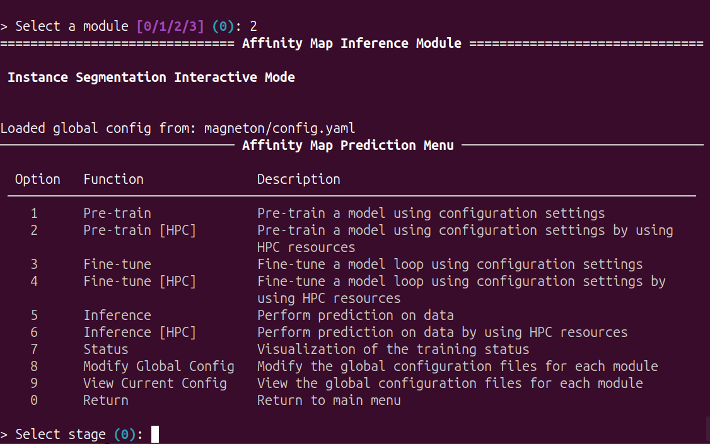
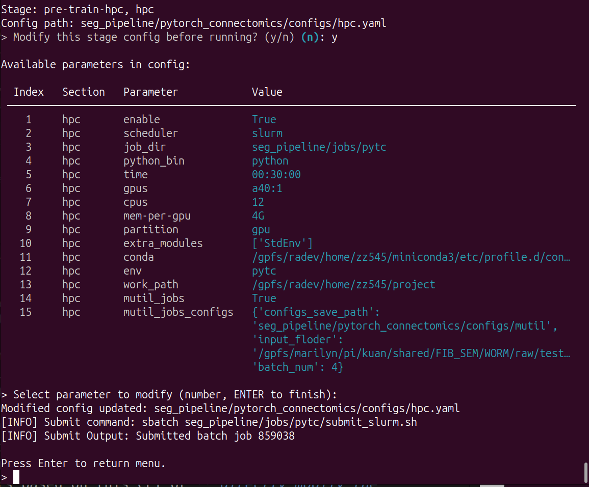

Affinity Map Inference
This tutorial provides step-by-step guidance for affinity map inference pipeline.
This section is integration and encapsulation of pytc. For more detailed, please refer to pytc document.
Main Menu
Run python -m magneton to start the CLI.

Input 2 and Enter, enter the affinity map inference module:

Options
This module can be used for configuration, model pretraining, fine-tuning and inference.
In pretraining: the model is pre-trained by inputting images and labeled images. This ultimately yields the pre-trained model parameters.
In fine-tuning: for specific imaging data, fine-tune the model by inputting images and labeled images (often as mini-batches for a single bounding box). This process ultimately yields the final model parameters.
In inference: inferring neuronal affinity maps for large-scale data using the final model.This process involves image blocking and stitching.
Global Configuration
This section is identical to the previous configuration. Only an interface has been added to facilitate configuration.
Input 9 and Enter, view current global configuration:
Input 8 and Enter, edit current global configuration.
Model pretraining
Input 1 and Enter, using local resources to pre train a model. The model is based on the configuration files (config_base and config_file, in global configuration file)
Input 2 and Enter, using HPC resources to pre train a model. The model is based on the configuration files (config_base, config_file and hpc, in global configuration file)
Before start the training, you can modify the configuration:

Then the pre-training will run automatically.
You can use
Ctrl+Cto stop it and Enter main menu.
When using HPC resources, you need to configure the hpc and the job will submit to the hpc based on this configuration:  You can change the parameters based on this CLI or directly modify the configuration file.
Model fine-tuning
This process is essentially the same as pre-training, except that it adds the checkpoint configuration.
Input 3 and Enter, using local resources to pre train a model. The model is based on the configuration files (config_base, config_file and checkpoint, in global configuration file)
Input 4 and Enter, using HPC resources to pre train a model. The model is based on the configuration files (config_base, config_file, checkpoint and hpc, in global configuration file)
Model inference
This section is optimized for large datasets. We first need to use the split tool to split large TIF/Precomputed images into multiple smaller blocks and save them in the same folder. Then, this module performs parallel processing on the segmented data. After completing all the inference, use the merge tool to stitch them together.
After encapsulation, the user experience remains consistent with the previous module:
Input 5 and Enter, using local resources to pre train a model. The model is based on the configuration files (config_base, config_file and checkpoint, in global configuration file)
Input 6 and Enter, using HPC resources to pre train a model. The model is based on the configuration files (config_base, config_file, checkpoint and hpc, in global configuration file)
However, for HPC configuration files, this mutil_jobs switch must be enabled and the mutil_jobs_configs must be correct.
configs_save_path: subprofile storage locationinput_floder: the path of blocksbatch_num: the number of blocks in parallel at once